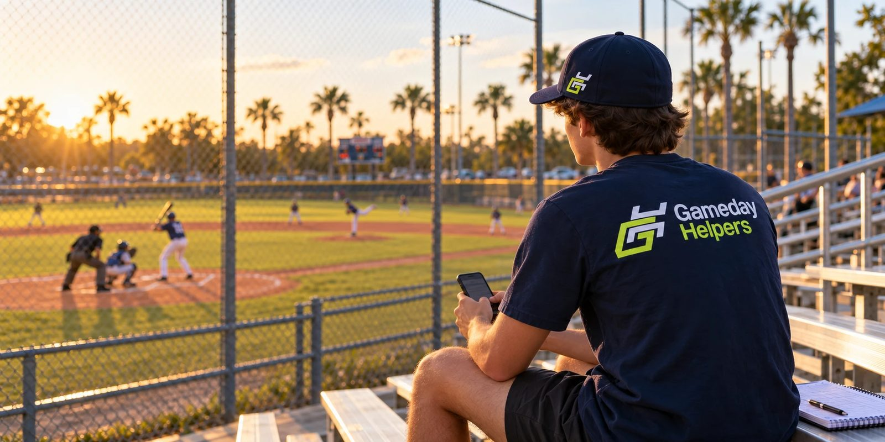

You coach.We score.
Find a local helper to run GameChanger for your Tampa Bay baseball or softball team, so you can focus on coaching.
Two-hour offers start at $35. No matching fee during the Tampa beta. Helper pay is separate and goes straight from you to the helper.
Signing up coaches and helpers now. Game matching opens once 50 helpers have joined. Registering today puts your team first in line.
Know GameChanger? Choose games that fit your schedule and keep 100% of your game pay.
Need helpers for a league or tournament? →
Three steps, once matching opens.
Register your team first. When matching opens, this is the whole process.
Starting with select Tampa leagues: Bayshore, Interbay, Keystone, Northside, Northwest, Palma Ceia, Tampa Bay, and West Tampa. Travel ball teams and tournaments are welcome too. Other leagues can register. Coverage there depends on which helpers sign up.
Built by a coach who knows the game-day scramble.
First pitch is minutes away and someone still has to run GameChanger, so you scan the bleachers and ask. Again. GameDay Helpers was built by a Tampa youth baseball coach so coaches can stop asking and people who already know the app can get paid to do it.
Every helper profile is reviewed by hand before a first match, and every match is made by a person during the beta. Skill levels on profiles are self-reported by the helper. GameDay Helpers does not run background checks.
Know GameChanger? Get paid to run it.
High schoolers, college students, parents in the stands, anyone 14 or older who can keep a clean book. Two-hour offers start at $35 and you keep all of it. Pick the leagues you can get to and choose the games that fit your schedule. Once you accept a game, commit to the agreed arrival time.
Helpers under 18 need a parent or guardian to approve by email before their first game. The first 50 helpers get a permanent Founding Helper number on their profile.
Questions coaches and helpers ask.
What does it cost?
Coaches pay nothing to GameDay Helpers during the Tampa beta. You pay your helper directly at the offer you set. Two-hour offers start at $35 ($20 for the first hour, $15 for each additional hour), and you can offer more.
Is matching available right now?
Not yet. We are signing up coaches and helpers first. Matching opens once 50 helpers have joined. Registered coaches get an email the day it opens.
Which leagues and areas are covered?
We are starting with eight Tampa leagues: Bayshore, Interbay, Keystone, Northside, Northwest, Palma Ceia, Tampa Bay, and West Tampa. Coaches from other leagues can register as "Other." Coverage there depends on which helpers sign up near you.
Are travel teams eligible?
Yes. Travel baseball and softball teams can register and request helpers the same way. Pick "Other" as your league and put your organization and home field in the notes. Tournament directors who need several fields covered should use the league and tournament form.
How do you assess helper experience?
Helpers report their own skill level and prior games when they sign up. Each profile is reviewed by hand before a first match, and we block any helper under 18 until a parent or guardian approves. After each game, coaches rate helpers and those ratings show on the helper's profile. There is no certification and no background check.
What happens after I register or request help?
Register a team: you get a welcome email with the link to request a helper. Request a game: you get a receipt email restating the game and offer, and we look for a helper. Submitting a request does not confirm a helper. When one is found, you get one email with their name, phone, and payment app.
What if no helper is available?
We email you and mark the game unfilled. More notice helps: a request a few days ahead has a much better chance than one a few hours ahead.
What happens if a game is canceled or rained out?
Cancel by text at least two hours before the helper's agreed arrival time and you owe nothing. After that, including rainouts or a cancellation when the helper is already at the field, the coach pays the helper $15 directly that day. The coach notifies the helper (and the parent, for helpers under 18). If the game already started, pay for time worked at the agreed rates, $15 minimum. GameDay Helpers does not collect or guarantee payment.
What does the helper bring?
A charged smartphone that can run GameChanger, arriving 15 minutes before first pitch. You provide the scorebook or scoreboard access if that is what you asked for.
How does the helper get into my GameChanger team?
Send the helper a scorekeeper invite from your GameChanger team, the same way you add an assistant coach. Never share your GameChanger password.
Can helpers under 18 participate?
Yes, from age 14. When a helper under 18 signs up, we email their parent or guardian a one-tap approval link. The helper is not matched to any game until that approval comes back.
How and when is the helper paid?
You pay the helper directly after the game, app to app, at the offer you set when you requested help. Venmo, Cash App, PayPal, or Zelle. No cash. GameDay Helpers never holds or processes game pay.
Fall ball 2026, Tampa Bay.
Free to register. The first 50 coaches and first 50 helpers get a permanent Founding badge.